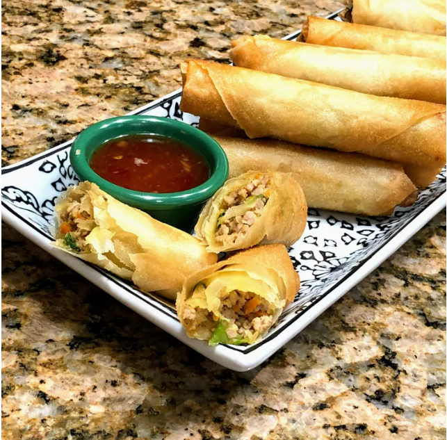

Lumpiang Shanghai

Description
Lumpiang Shanghai is a Filipino-style spring roll that is typically filled with ground pork, minced onions, carrots, and spices. The filling is then wrapped in a thin spring roll wrapper and deep-fried until crispy. Lumpiang Shanghai is a popular dish in the Philippines and is often served as an appetizer or snack.
This Lumpiang Shanghai recipe is easy to make and perfect for parties or gatherings. The combination of ground pork, vegetables, and seasonings creates a flavorful and satisfying appetizer that is sure to be a hit with your family and friends.
Ingredients
- 1 lb ground pork
- 1/2 cup carrots, minced
- 1/2 cup onions, minced
- 2 cloves garlic, minced
- 1/2 cup green onions, chopped
- 1 egg
- 1 tsp salt
- 1/2 tsp black pepper
- 1 pack spring roll wrappers
- 2 cups vegetable oil, for frying
Instructions
- In a large bowl, combine the ground pork, carrots, onions, garlic, green onions, egg, salt, and pepper. Mix until well combined.
- Place a spoonful of the pork mixture in the center of a spring roll wrapper. Fold the sides of the wrapper over the filling and roll tightly to form a log. Seal the edge with a bit of water.
- Heat the vegetable oil in a large skillet over medium heat. Fry the lumpia in batches until golden brown and crispy, about 3-4 minutes per side.
- Remove the lumpia from the skillet and drain on paper towels. Serve hot with sweet and sour sauce or banana ketchup.